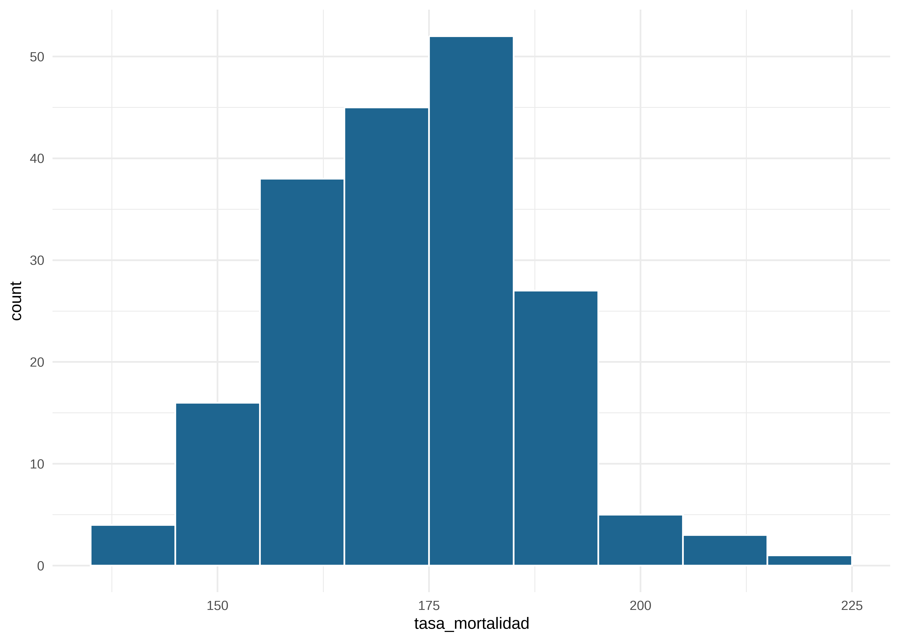
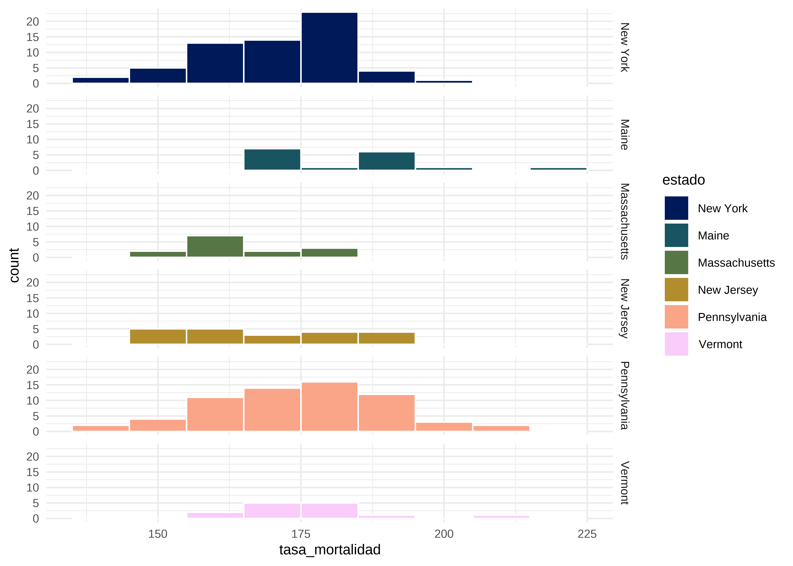
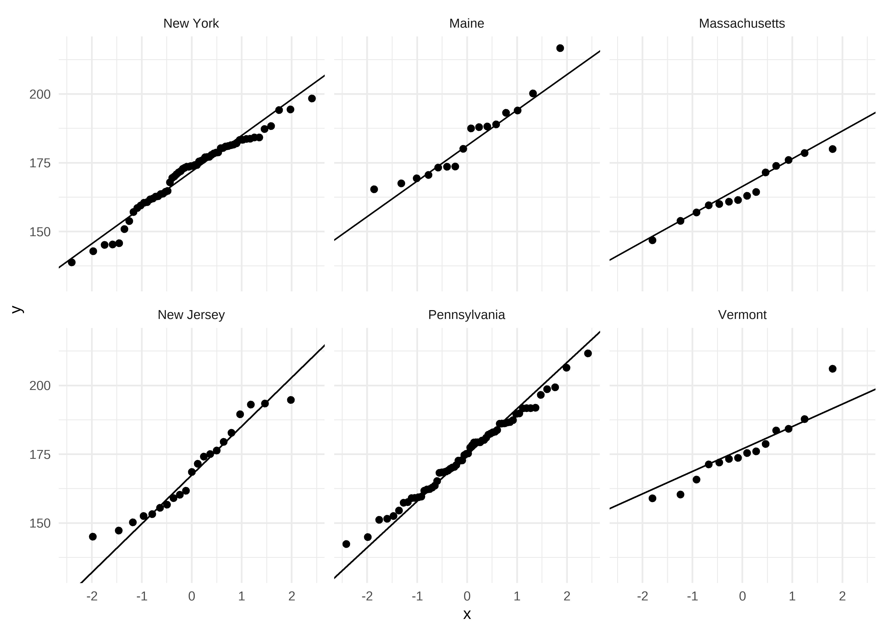
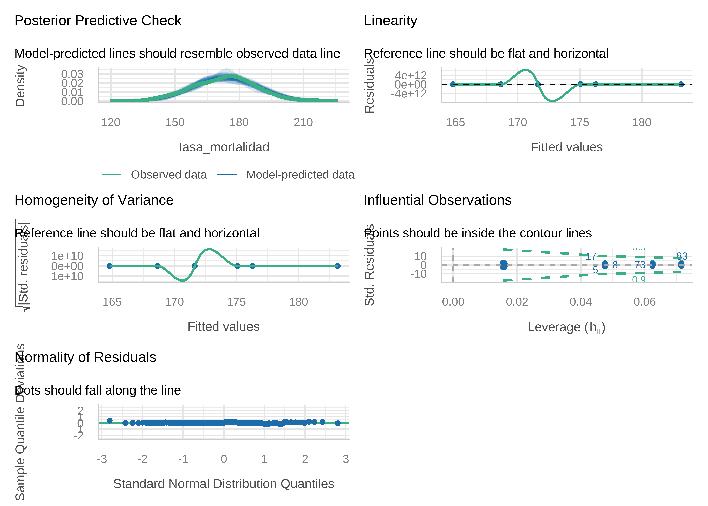

# tablas salida del modelo
library(gtsummary)
# chequeo de supuestos
library(easystats)
library(nortest)
library(pwr)
# comparación de medias
library(emmeans)
# análisis exploratorio
library(skimr)
library(dlookr)
# paletas de colores aptas daltonismo
library(scico)
# manejo de datos
library(janitor)
library(tidyverse)19 Análisis de la varianza (ANOVA)
Christian Ballejo ![]()
Andrea Silva
Tamara Ricardo
19.1 Introducción
El análisis de varianza (ANOVA) es una extensión del modelo lineal general que se utiliza para comparar las medias de una variable dependiente continua (\(Y\)) entre diferentes niveles de una variable explicativa categórica (\(X\)), que debe tener al menos tres niveles.
La hipótesis nula (\(H_0\)) del test estadístico establece que las medias de la variable dependiente son iguales en todos los grupos, mientras que la hipótesis alternativa (\(H_1\)) plantea que al menos dos medias difieren significativamente:
\(H_0: \mu_1 = \mu_2 = ... = \mu_i\)
\(H_1\): al menos una \(\mu_i \not= \mu_j\)
Por lo tanto, el ANOVA permite comparar múltiples medias, pero lo hace analizando la variabilidad entre y dentro de los grupos.
La variabilidad total se descompone en dos componentes:
Intervarianza (SSB): Variabilidad entre los grupos.
Intravarianza (SSE): Variabilidad dentro de los grupos.
El estadístico \(F\) del ANOVA, que sigue una distribución F de Fisher-Snedecor, compara estas dos fuentes de variabilidad:
\[ F = \frac{SSB/(k-1)}{SSE/(n-k)} \]
donde:
\(k\): el número de grupos.
\(n\): número total de observaciones.
Si se cumple \(H_0\), el estadístico \(F\) tiende a 1, ya que las varianzas entre y dentro de los grupos son similares. Si las medias difieren significativamente, la intervarianza será mayor que la intravarianza, resultando en valores de \(F\) superiores a 1.
19.2 ANOVA de un factor o de una vía
El ANOVA de una vía puede considerare como una extensión de los t-test independientes para comparar más de dos grupos de un factor. En este contexto, factor se refiere a la variable categórica que define los grupos.
Para que los resultados del ANOVA sean válidos, deben cumplirse los siguientes supuestos:
Aleatoriedad: Las observaciones deben ser aleatorias.
Independencia: Las observaciones entre grupos deben ser independientes.
Variable dependiente: Cuantitativa continua.
Variable explicativa: Categórica con más de dos niveles.
Normalidad: La distribución de la variable dependiente dentro de cada grupo debe ser normal.
Homocedasticidad: Las varianzas de los grupos deben ser homogéneas.
19.3 Ejemplo práctico en R
Nuevamente vamos a trabajar con el conjunto de datos “cancer_USA.txt”, que contiene información sobre la tasa de mortalidad por cáncer (por 100.000 habitantes) en distintos condados de la Costa Este de Estados Unidos. Nuestro objetivo será analizar la relación entre la tasa de mortalidad (tasa_mortalidad) y el estado de residencia (estado).
Comenzaremos por cargar los paquetes necesarios:
Cargamos y exploramos los datos:
# Carga datos
datos <- read_csv2("datos/cancer_USA.txt")
# Explora datos
glimpse(datos)Rows: 213
Columns: 10
$ condado <chr> "Belknap County", "Carroll County", "Cheshire Count…
$ estado <chr> "New Hampshire", "New Hampshire", "New Hampshire", …
$ tasa_mortalidad <dbl> 182.6, 168.8, 162.8, 181.6, 155.0, 163.2, 173.1, 17…
$ mediana_edad <dbl> 46.1, 50.3, 42.0, 48.1, 41.9, 40.1, 42.6, 43.5, 37.…
$ mediana_edad_cat <chr> "45+ años", "45+ años", "36-39 años", "45+ años", "…
$ mediana_ingresos <dbl> 59831, 57556, 56008, 42491, 56353, 71233, 62429, 79…
$ pct_pobreza <dbl> 10.0, 10.7, 11.8, 14.9, 11.6, 8.7, 9.5, 6.1, 11.8, …
$ pct_salud_publica <dbl> 16.8, 13.4, 12.7, 22.5, 14.0, 12.7, 13.1, 9.0, 12.4…
$ pct_sec_incompleta <dbl> 15.4, 14.8, 6.1, 13.2, 6.6, 12.9, 10.9, 13.5, 6.1, …
$ pct_desempleo <dbl> 5.3, 5.8, 6.1, 6.9, 5.0, 5.9, 5.2, 5.6, 6.5, 5.8, 1…La base de datos tiene observaciones y variables. La variable dependiente es tasa_mortalidad, mientras que estado es nuestra variable explicativa, categórica con 9 niveles.
Exploremos más en profundidad la estructura de los datos usando la función skim() del paquete skimr:
# Resumen de los datos
skim(datos)| Name | datos |
| Number of rows | 213 |
| Number of columns | 10 |
| _______________________ | |
| Column type frequency: | |
| character | 3 |
| numeric | 7 |
| ________________________ | |
| Group variables | None |
Variable type: character
| skim_variable | n_missing | complete_rate | min | max | empty | n_unique | whitespace |
|---|---|---|---|---|---|---|---|
| condado | 0 | 1 | 10 | 19 | 0 | 174 | 0 |
| estado | 0 | 1 | 5 | 13 | 0 | 9 | 0 |
| mediana_edad_cat | 0 | 1 | 8 | 10 | 0 | 4 | 0 |
Variable type: numeric
| skim_variable | n_missing | complete_rate | mean | sd | p0 | p25 | p50 | p75 | p100 | hist |
|---|---|---|---|---|---|---|---|---|---|---|
| tasa_mortalidad | 0 | 1 | 172.43 | 14.23 | 138.8 | 162.2 | 173.3 | 181.6 | 216.7 | ▂▆▇▃▁ |
| mediana_edad | 0 | 1 | 42.06 | 3.67 | 30.2 | 39.9 | 42.2 | 44.4 | 51.9 | ▁▂▇▅▁ |
| mediana_ingresos | 0 | 1 | 55740.31 | 13795.54 | 33687.0 | 45860.0 | 52195.0 | 60387.0 | 103876.0 | ▆▇▂▂▁ |
| pct_pobreza | 0 | 1 | 13.25 | 3.91 | 4.7 | 10.7 | 13.2 | 15.4 | 31.5 | ▃▇▃▁▁ |
| pct_salud_publica | 0 | 1 | 17.86 | 4.91 | 7.1 | 14.6 | 17.7 | 20.7 | 38.2 | ▃▇▃▁▁ |
| pct_sec_incompleta | 0 | 1 | 13.21 | 4.76 | 3.1 | 10.2 | 12.7 | 15.7 | 34.2 | ▃▇▃▁▁ |
| pct_desempleo | 0 | 1 | 7.50 | 1.76 | 3.0 | 6.4 | 7.3 | 8.6 | 14.0 | ▂▇▆▁▁ |
# Frecuencia por estado
tabyl(datos$estado) datos$estado n percent
Connecticut 8 0.03755869
Maine 16 0.07511737
Massachusetts 14 0.06572770
New Hampshire 10 0.04694836
New Jersey 21 0.09859155
New York 62 0.29107981
Pennsylvania 64 0.30046948
Rhode Island 4 0.01877934
Vermont 14 0.06572770Observamos que la variable estado tiene 9 niveles y ningún valor ausente (n_missing = 0). La variable dependiente tiene valores entre 139 y 217 (casos/100 000 habitantes) y tampoco presenta valores NA.
Los estados con menos observaciones (Connecticut, New Hampshire y Rhode Island) serán excluidos para evitar sesgos en el análisis. También convertiremos la variable estado a un factor ordenado con el comando fct_relevel() del paquete tidyverse:
# Filtramos estados con pocas observaciones y convertimos a factor
datos <- datos |>
filter(!estado %in% c("New Hampshire", "Rhode Island", "Connecticut")) |>
mutate(estado = fct_relevel(estado, "New York", after = 0))
# Verificamos con class() y levels()
class(datos$estado)[1] "factor"levels(datos$estado)[1] "New York" "Maine" "Massachusetts" "New Jersey"
[5] "Pennsylvania" "Vermont" Graficamos la distribución de la variable dependiente mediante un histograma y un boxplot:
# histograma
datos |>
ggplot(mapping = aes(x = tasa_mortalidad)) +
geom_histogram(binwidth = 10, color = "white", fill = "#1E6590") +
theme_minimal() # tema claro
# boxplot
datos |>
ggplot(mapping = aes(y = tasa_mortalidad)) +
geom_boxplot(fill = "#B2D680") +
theme_minimal() # tema claro
La distribución global es simétrica pareciera existir un valor atípico.
Ahora veamos como es la distribución de la tasa de mortalidad por estado.
# Histograma por grupos
datos |>
ggplot(mapping = aes(x = tasa_mortalidad, fill = estado)) +
geom_histogram(binwidth = 10, color = "white") +
scale_fill_scico_d() + # paleta colorblind-friendly
facet_grid(estado ~ .) + # variable estado en filas
theme_minimal() # tema claro
# Boxplot por grupos
datos |>
ggplot(mapping = aes(x = estado, y = tasa_mortalidad, fill = estado)) +
geom_boxplot() +
scale_fill_scico_d() + # paleta colorblind-friendly
theme_minimal() + # tema claro
theme(axis.text.x = element_text(angle = 90)) # gira etiquetas eje x
Observamos que las distribuciones en algunos grupos parecen simétricas y hay diferencias visuales entre las medianas. Esto plantea la pregunta de si dichas diferencias son estadísticamente significativas.
Análisis de supuestos
Si bien es más recomendable y habitual realizar el análisis de supuestos a partir de los residuales del modelo, podemos chequear que la variable dependiente cumpla con los supuestos de normalidad y homocedasticidad previo a realizar el análisis.
Normalidad
Usamos el test de Kolmogorov-Smirnov con corrección de Lilliefors para grupos con más de 50 observaciones con la función lillie.test() del paquete nortest. Como algunos grupos tienen menos de 50 observaciones, también podríamos utilizar el test de Shapiro-Wilk mediante la función shapiro.test() de R base:
datos |>
filter(estado == "New York") |>
pull(tasa_mortalidad) |> # con pull() extraemos datos de tasa_mortalidad como vector
lillie.test() # aplicamos test de bondad de ajuste
Lilliefors (Kolmogorov-Smirnov) normality test
data: pull(filter(datos, estado == "New York"), tasa_mortalidad)
D = 0.11633, p-value = 0.03637datos |>
filter(estado == "Maine") |>
pull(tasa_mortalidad) |> # con pull() extraemos datos de tasa_mortalidad como vector
lillie.test() # aplicamos test de bondad de ajuste
Lilliefors (Kolmogorov-Smirnov) normality test
data: pull(filter(datos, estado == "Maine"), tasa_mortalidad)
D = 0.18801, p-value = 0.1364datos |>
filter(estado == "Massachusetts") |>
pull(tasa_mortalidad) |> # con pull() extraemos datos de tasa_mortalidad como vector
lillie.test() # aplicamos test de bondad de ajuste
Lilliefors (Kolmogorov-Smirnov) normality test
data: pull(filter(datos, estado == "Massachusetts"), tasa_mortalidad)
D = 0.1591, p-value = 0.4377datos |>
filter(estado == "New Jersey") |>
pull(tasa_mortalidad) |> # con pull() extraemos datos de tasa_mortalidad como vector
lillie.test() # aplicamos test de bondad de ajuste
Lilliefors (Kolmogorov-Smirnov) normality test
data: pull(filter(datos, estado == "New Jersey"), tasa_mortalidad)
D = 0.14095, p-value = 0.3387datos |>
filter(estado == "Pennsylvania") |>
pull(tasa_mortalidad) |> # con pull() extraemos datos de tasa_mortalidad como vector
lillie.test() # aplicamos test de bondad de ajuste
Lilliefors (Kolmogorov-Smirnov) normality test
data: pull(filter(datos, estado == "Pennsylvania"), tasa_mortalidad)
D = 0.066685, p-value = 0.6839datos |>
filter(estado == "Vermont") |>
pull(tasa_mortalidad) |> # con pull() extraemos datos de tasa_mortalidad como vector
lillie.test() # aplicamos test de bondad de ajuste
Lilliefors (Kolmogorov-Smirnov) normality test
data: pull(filter(datos, estado == "Vermont"), tasa_mortalidad)
D = 0.14856, p-value = 0.5497Podemos graficar el comportamiento de la variable dependiente en cada grupo mediante Q-Q plots usando el paquete ggplot2:
datos |>
ggplot() +
geom_qq(mapping = aes(sample = tasa_mortalidad)) +
geom_qq_line(mapping = aes(sample = tasa_mortalidad)) +
facet_wrap(~estado) +
theme_minimal()
Homocedasticidad
Verificamos la homogeneidad de varianzas por grupo con el test de Bartlett:
bartlett.test(
tasa_mortalidad ~ estado, # utiliza sintaxis fórmula
data = datos
)
Bartlett test of homogeneity of variances
data: tasa_mortalidad by estado
Bartlett's K-squared = 4.8185, df = 5, p-value = 0.4384La variable respuesta cumple con el supuesto de homocedasticidad (\(p = 0.438\)).
Análisis de varianza
Si bien podemos realizar un test ANOVA mediante la función aov() de R base, en el contexto de este curso utilizaremos la función lm() del paquete stats que usamos anteriormente para ajustar el modelo de regresión lineal simple:
lm(tasa_mortalidad ~ estado, data = datos)
Call:
lm(formula = tasa_mortalidad ~ estado, data = datos)
Coefficients:
(Intercept) estadoMaine estadoMassachusetts
171.640 11.510 -6.840
estadoNew Jersey estadoPennsylvania estadoVermont
-3.007 3.419 4.631 Siempre que trabajemos con modelos, conviene que asignemos los resultados a objetos que luego nos servirán para aplicar otras funciones. Como nuestra variable explicativa es categórica y nuestro principal interés es conocer si existen diferencias significativas entre grupos, no analizaremos los coeficientes del modelo con summary(), sino la significancia del test F mediante la función anova().
# ANOVA
modelo <- lm(tasa_mortalidad ~ estado, data = datos)
# Salida del modelo
anova(modelo)Analysis of Variance Table
Response: tasa_mortalidad
Df Sum Sq Mean Sq F value Pr(>F)
estado 5 3513 702.67 3.7103 0.003179 **
Residuals 185 35036 189.38
---
Signif. codes: 0 '***' 0.001 '**' 0.01 '*' 0.05 '.' 0.1 ' ' 1Los resultados del test F nos muestran un \(p = 0,003\), sugiriendo que al menos dos grupos son diferentes entre sí.
Comparaciones múltiples
Una vez que comprobamos que existen diferencias significativas entre grupos, nos interesa saber cuáles grupos son diferentes entre sí. Para ello, existen distintos algoritmos de comparaciones múltiples con sus respectivas correcciones, como el test de Diferencia Honestamente Significativa de Tukey, también llamado Tukey HSD o test de Tukey. Esta prueba se aplica para grupos equilibrados (mismo tamaño) y varianzas similares (homocedásticas). Es una prueba conservadora, dado que mantiene bajo el error de tipo I, sacrificando la capacidad de detectar diferencias existentes.
Si las varianzas son homocedásticas pero los grupos difieren en tamaño, podemos usar el test de Tukey si tenemos que comparar entre varios grupos, o la corrección de Bonferroni para grupos más reducidos.
| Código | Rango |
|---|---|
| *** | 0 a 0,001 |
| ** | 0,001 a 0,01 |
| * | 0,01 a 0,05 |
| . | 0,05 a 0,1 |
| 0,1 a 1 |
El paquete emmeans (Lenth y Piaskowski 2026) es una herramienta muy versátil y poderosa para realizar comparaciones múltiples. Comenzaremos utilizando la función emmeans() con el argumento specs = "estado" para crear un objeto que contenga las medias marginales por grupo:
comp <- emmeans(modelo, specs = "estado")Para realizar las comparaciones múltiples mediante test de Tukey usamos el comando contrast() con el argumento method = "pairwise":
contrast(comp, method = "pairwise") contrast estimate SE df t.ratio p.value
New York - Maine -11.51 3.86 185 -2.983 0.0376
New York - Massachusetts 6.84 4.07 185 1.680 0.5469
New York - New Jersey 3.01 3.47 185 0.865 0.9542
New York - Pennsylvania -3.42 2.45 185 -1.394 0.7305
New York - Vermont -4.63 4.07 185 -1.137 0.8652
Maine - Massachusetts 18.35 5.04 185 3.644 0.0046
Maine - New Jersey 14.52 4.57 185 3.179 0.0211
Maine - Pennsylvania 8.09 3.85 185 2.103 0.2901
Maine - Vermont 6.88 5.04 185 1.366 0.7474
Massachusetts - New Jersey -3.83 4.75 185 -0.807 0.9659
Massachusetts - Pennsylvania -10.26 4.06 185 -2.527 0.1217
Massachusetts - Vermont -11.47 5.20 185 -2.205 0.2402
New Jersey - Pennsylvania -6.43 3.46 185 -1.857 0.4322
New Jersey - Vermont -7.64 4.75 185 -1.609 0.5939
Pennsylvania - Vermont -1.21 4.06 185 -0.299 0.9997
P value adjustment: tukey method for comparing a family of 6 estimates Los resultados del test de Tukey nos muestran diferencias significativas en la tasa de mortalidad por cáncer en el estado de Maine respecto de New York, Massachusetts y New Jersey.
Para mayor claridad, podemos mostrar las comparaciones múltiples mediante un gráfico:
plot(comp) +
theme_minimal() # tema claro
El rombo del medio representa la media marginal para cada grupo y el rectángulo azul, su intervalo de confianza, aquellos grupos en los que no se superponen los intervalos de confianza son estadísticamente diferentes entre sí.
Bondad de ajuste
El tamaño de efecto comúnmente utilizado para el caso de ANOVA es \(\eta^2\) (eta-cuadrado), que se calcula como el cociente de la suma de cuadrados del efecto sobre la suma de cuadrados total.
anova(modelo)Analysis of Variance Table
Response: tasa_mortalidad
Df Sum Sq Mean Sq F value Pr(>F)
estado 5 3513 702.67 3.7103 0.003179 **
Residuals 185 35036 189.38
---
Signif. codes: 0 '***' 0.001 '**' 0.01 '*' 0.05 '.' 0.1 ' ' 1# calculo eta-cuadrado
eta2 <- 3513 / (3513 + 35036)
eta2[1] 0.09113077Podemos llegar al mismo valor usando la función r2() del paquete performance:
r2(modelo)# R2 for Linear Regression
R2: 0.091
adj. R2: 0.067Potencia
Los test de potencia permiten determinar la probabilidad de encontrar diferencias significativas entre las medias para un determinado nivel de significancia indicando el tamaño de los grupos.
En base al eta-cuadrado obtenido anteriormente, calculamos el tamaño de efecto convencional mediante la función cohen.ES() del paquete pwr (Champely 2020):
cohen.ES(test = "anov", size = "small")
Conventional effect size from Cohen (1982)
test = anov
size = small
effect.size = 0.1La función pwr.anova.test() del paquete pwr nos permite calcular la potencia en base al número de grupos, número de observaciones por grupo, tamaño de efecto y nivel de significancia (habitualmente 0,05).
Para grupos de igual tamaño usamos el siguiente código:
pwr.anova.test(k = k, n = n, f = eta_cuadrado, sig.level = 0.05)En nuestro ejemplo, donde los tamaños de grupo son diferentes, primero debemos calcular el tamaño de grupo efectivo:
# Número de grupos
k <- nlevels(datos$estado)
# Número de observaciones por grupo
n <- tabyl(datos$estado)$n
# Tamaño de grupo efectivo
neff <- sum(n)^2 / sum(n^2)Calculamos la potencia:
pwr.anova.test(k = k, n = neff, f = eta2, sig.level = 0.05)
Balanced one-way analysis of variance power calculation
k = 6
n = 4.040425
f = 0.09113077
sig.level = 0.05
power = 0.05670154
NOTE: n is number in each groupAnálisis de residuales
Para poder dar por válidos los resultados del ANOVA es necesario verificar que se satisfacen las condiciones analizando los residuos del modelo. Para ello, usaremos el mismo procedimiento que vimos para la regresión lineal simple.
Método gráfico con paquete performance:
check_model(modelo)
Chequeo normalidad de residuales mediante test de Lilliefors:
lillie.test(modelo$residuals)
Lilliefors (Kolmogorov-Smirnov) normality test
data: modelo$residuals
D = 0.046833, p-value = 0.388Chequeo homocedasticidad (test de Breusch-Pagan):
check_heteroscedasticity(modelo)OK: Error variance appears to be homoscedastic (p = 0.597).Chequeo presencia de outliers (distancia de Cook):
check_outliers(modelo)OK: No outliers detected.
- Based on the following method and threshold: cook (0.5).
- For variable: (Whole model)19.4 Conclusión
Se ha realizado un ANOVA de una vía para comparar la tasa de mortalidad por cáncer en seis estados de Estados Unidos. Se encontraron diferencias estadísticamente significativas entre las medias de los grupos (\(F = 3,71, p = 0.003\)). El eta-cuadrado fue de 0.091, lo que indica que el estado de residencia explica un 9.1% de la varianza total en los valores de la tasa de mortalidad por cáncer. La potencia de la prueba estadística fue del 5.7%.
Se realizó la prueba post hoc de Tukey HSD y se encontró que media de mortalidad para el estado de Maine fue estadísticamente superiror respecto de los estados de Massachusetts, New York y New Jersey (\(p < 0.05\)).
Referencias
Agresti, Alan. 2015. Foundations of Linear and Generalized Linear Models. Wiley Series En Probability y Statistics. John Wiley & Sons, Inc.
Champely, Stephane. 2020. pwr: Basic Functions for Power Analysis. https://doi.org/10.32614/CRAN.package.pwr.
Firke, Sam. 2016. janitor: Simple Tools for Examining and Cleaning Dirty Data. The R Foundation. https://doi.org/10.32614/cran.package.janitor.
Gross, Juergen, y Uwe Ligges. 2015. nortest: Tests for Normality. https://doi.org/10.32614/CRAN.package.nortest.
Lenth, Russell V., y Julia Piaskowski. 2026. emmeans: Estimated Marginal Means, aka Least-Squares Means. https://doi.org/10.32614/CRAN.package.emmeans.
Lüdecke, Daniel, Mattan S. Ben-Shachar, Indrajeet Patil, et al. 2022. «easystats: Framework for Easy Statistical Modeling, Visualization, and Reporting». CRAN, advance online publication. https://doi.org/10.32614/CRAN.package.easystats.
Ryu, Choonghyun. 2025. dlookr: Tools for Data Diagnosis, Exploration, Transformation. https://CRAN.R-project.org/package=dlookr.
Sjoberg, Daniel D., Karissa Whiting, Michael Curry, Jessica A. Lavery, y Joseph Larmarange. 2021. «Reproducible Summary Tables with the gtsummary Package». The R Journal 13: 570-80. https://doi.org/10.32614/RJ-2021-053.
Triola, Mario F. 2018. ESTADÍSTICA Decimosegunda Edicion. Pearson Educación de México, SA de CV.
Waring, Elin, Michael Quinn, Amelia McNamara, Eduardo Arino de la Rubia, Hao Zhu, y Shannon Ellis. 2026. skimr: Compact and Flexible Summaries of Data. https://doi.org/10.32614/CRAN.package.skimr.
Wickham, Hadley, Mara Averick, Jennifer Bryan, et al. 2019. «Welcome to the Tidyverse». Journal of Open Source Software 4 (43): 1686. https://doi.org/10.21105/joss.01686.